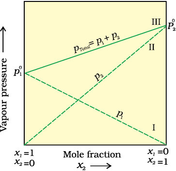
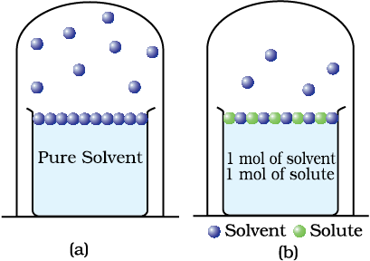
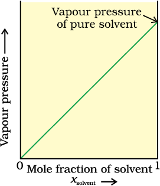

The solutions of liquids and solids in a liquid may contain one or more volatile components. Generally, the liquid solvent is volatile. The solute may or may not be volatile. We shall discuss the properties of only binary solutions, that is, the solutions containing two components, namely, the solutions of (i) liquids in liquids and (ii) solids in liquids.
Let us consider a binary solution of two volatile liquids and denote the two components as 1 and 2. When taken in a closed vessel, both the components would evaporate and eventually an equilibrium would be established between vapour phase and the liquid phase. Let the total vapour pressure at this stage be ptotal and p1 and p2 be the partial vapour pressures of the two components 1 and 2 respectively. These partial pressures are related to the mole fractions x1 and x2 of the two components 1 and 2 respectively.
The French chemist, Francois Marte Raoult (1886) gave the quantitative relationship between them. The relationship is known as the Raoult’s law which states that for a solution of volatile liquids, the partial vapour pressure of each component of the solution is directly proportional to its mole fraction present in solution.
Thus, for component 1
p1 ∝ x1
and p1 = p1°x1
where p1° is the vapour pressure of pure component 1 at the same temperature.
Similarly, for component 2
p2 = p2° x2
where p2° represents the vapour pressure of the pure component 2.
According to Dalton’s law of partial pressures, the total pressure (ptotal) over the solution phase in the container will be the sum of the partial pressures of the components of the solution and is given as:
ptotal = p1 + p2
Substituting the values of p1 and p2, we get
ptotal = x1 p1° + x2 p2°
= (1 – x2) p1° + x2 p2°
= p1° + (p2° – p1°) x2
Following conclusions can be drawn from the equation.
(i) Total vapour pressure over the solution can be related to the mole fraction of any one component.
(ii) Total vapour pressure over the solution varies linearly with the mole fraction of component 2.
(iii) Depending on the vapour pressures of the pure components 1 and 2, total vapour pressure over the solution decreases or increases with the increase of the mole fraction of component 1.

The plot of vapour pressure and mole fraction of an ideal solution at constant temperature. The dashed lines I and II represent the partial pressure of the components. (It can be seen from the plot that p1 and p2 are directly proportional to x1 and x2, respectively). The total vapour pressure is given by line marked III in the figure.
A plot of p1 or p2 versus the mole fractions x1 and x2 for a solution gives a linear plot as shown. These lines (I and II) pass through the points and respectively when x1 and x2 equal unity. Similarly the plot (line III) of ptotal versus x2 is also linear. The minimum value of ptotal is p1° and the maximum value is p2°, assuming that component 1 is less volatile than component 2, i.e., p1° < p2°.
The composition of vapour phase in equilibrium with the solution is determined by the partial pressures of the components. If y1 and y2 are the mole fractions of the components 1 and 2 respectively in the vapour phase then, using Dalton’s law of partial pressures:
p1 = y1 ptotal
p2 = y2 ptotal
In general
pi = yi ptotal
According to Raoult’s law, the vapour pressure of a volatile component in a given solution is given by pi = xi pi°. In the solution of a gas in a liquid, one of the components is so volatile that it exists as a gas and we have already seen that its solubility is given by Henry’s law which states that
p = KHx.
If we compare the equations for Raoult’s law and Henry’s law, it can be seen that the partial pressure of the volatile component or gas is directly proportional to its mole fraction in solution. Only the proportionality constant KH differs from p1°. Thus, Raoult’s law becomes a special case of Henry’s law in which KH becomes equal to p1°.
Another important class of solutions consists of solids dissolved in liquid, for example, sodium chloride, glucose, urea and cane sugar in water and iodine and sulphur dissolved in carbon disulphide. Some physical properties of these solutions are quite different from those of pure solvents. For example, vapour pressure. Liquids at a given temperature vapourise and under equilibrium conditions the pressure exerted by the vapours of the liquid over the liquid phase is called vapour pressure. In a pure liquid the entire surface is occupied by the molecules of the liquid. If a non-volatile solute is added to a solvent to give a solution, the vapour pressure of the solution is solely from the solvent alone. This vapour pressure of the solution at a given temperature is found to be lower than the vapour pressure of the pure solvent at the same temperature. In the solution, the surface has both solute and solvent molecules; thereby the fraction of the surface covered by the solvent molecules gets reduced. Consequently, the number of solvent molecules escaping from the surface is correspondingly reduced, thus, the vapour pressure is also reduced.

Decrease in the vapour pressure of the solvent on account of the presence of solute in the solvent (a) evaporation of the molecules of the solvent from its surface is denoted by , (b) in a solution, solute particles have been denoted by and they also occupy part of the surface area.
The decrease in the vapour pressure of solvent depends on the quantity of non-volatile solute present in the solution, irrespective of its nature. For example, decrease in the vapour pressure of water by adding 1.0 mol of sucrose to one kg of water is nearly similar to that produced by adding 1.0 mol of urea to the same quantity of water at the same temperature.
Raoult’s law in its general form can be stated as, for any solution the partial vapour pressure of each volatile component in the solution is directly proportional to its mole fraction.
In a binary solution, let us denote the solvent by 1 and solute by 2. When the solute is non-volatile, only the solvent molecules are present in vapour phase and contribute to vapour pressure. Let p1 be the vapour pressure of the solvent, x1 be its mole fraction, pi° be its vapour pressure in the pure state. Then according to Raoult’s law
p1 ∝ x1
and p1 = x1p1°
The proportionality constant is equal to the vapour pressure of pure solvent, p1°. A plot between the vapour pressure and the mole fraction of the solvent is linear.

If a solution obeys Raoult's law for all concentrations, its vapour pressure would vary linearly from zero to the vapour pressure of the pure solvent.